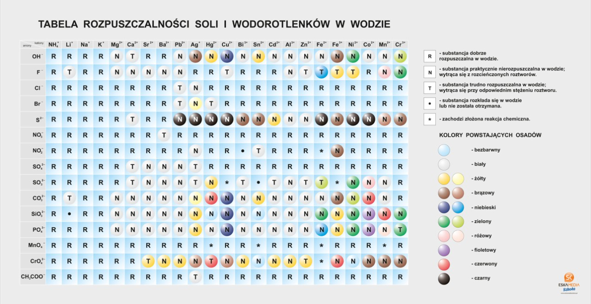

Nauczanie zdalne
Klasa 7A
wychowawca Ewa Lipi�ska-Krzemianowska
Pi�tek 29.05.2020r
WYCHOWANIE FIZYCZNE/CH�OPCY
Temat : �wiczenia ogólnorozwojowe
Uwagi wst�pne :
- �wicz tylko wtedy,kiedy jeste� zdrowy
- staraj si� �wiczy� w stroju sportowym
- �wiczenia wykonuj przy otwartym/uchylonym oknie
- �wiczenia g�ówne poprzed� rozgrzewk�
- pami�taj o rozlu�nianiu mi�ni pomi�dzy poszczególnymi �wiczeniami
Propozycja �wicze� :
- Bieg w miejscu ok.3-4 min.
- z wysokim unoszeniem kolan
- z uderzaniem pi�tami o po�ladki
- z klaskaniem pod kolanami(raz pod prawym,raz pod lewym)
- Stoj�c w lekkim rozkroku,wykonaj 10 pó�przysiadów -2x
- W siadzie prostym wykonaj sk�on,raz do prawej,raz do lewej nogi - po 5
- W le�eniu ty�em (podkurcz nogi,ramiona wzd�u� tu�owia) wykonaj
2 x 12 brzuszków
- Stoj�c w lekkim rozkroku,wykonaj po 10 przeskoków
- w przód i w ty�
- w bok,w praw� stron� i z powrotem
- w bok w ,lew� stron� i z powrotem
- Stoj�c w pozycji zwartej (nogi z��czone, ramiona wzd�u� tu�owia) ,
wykonaj 2 x 10 pajacyków
- W siadzie prostym,wykonaj po 5 sk�onów z pog��bianiem,raz do lewej,
raz do prawej nogi
- W le�eniu ty�em, unie� tu�ów ( podpór bioder ramionami),wykonaj
tzw. rowerek - 2 x po 30 sek.
- �wiczenie oddechowe - stoj�c w postawie swobodnej,unie� ramiona w gór�
( wdech),wykonaj sk�on z pog��bianiem ( wydech ) - 5 x
Ka�d� seri� powtórz 2 razy,przerwa pomi�dzy seriami ok.10 min.
Wykonuj�c �wiczenia w domu wspomagaj si� nagraniami video dost�pnymi
w serwisie internetowym You Tube ,wybieraj�c �wiczenia dostosowane
do Twoich mo�liwo�ci.
Dzi�kuj�
ZAJ�CIA TERAPEUTYCZNO -USPRAWNIAJ�CE -PLASTYCZNE
Temat: Kartka na specjalne okazje -serduszko
Dzisiaj zrobimy kolorow�, sk�adan� kartk� w kszta�cie serca z kwiatkiem w �rodku.
Obejrzyj film. Zobaczysz jak w prosty sposób mo�na zrobi� �liczn� kartk�.
https://www.youtube.com/watch?v=Kd8W08z3XN8
Zadanie:
Przygotuj materia�y, które b�d� nam potrzebne do wykonania kolorowej kartki: jedna kartka bia�a, kartki kolorowe na przyk�ad ró�owa, czerwona i zielone, klej, no�yczki.
Wzoruj�c si� na filmie zrób swoj� kartk� okoliczno�ciow�.
Narysuj dwa serca ró�nej wielko�ci o�ówkiem – jedno na bia�ej kartce a drugie na kolorowej i wytnij. Naklej serce mniejsze na wi�ksze.
Narysuj, wytnij i przyklej �odygi i li�cie.
Z�ó� kartk� z serca na pó� tak, �eby li�cie i �odyga by�y w �rodku kartki.
Narysuj kwiatki – tulipany na kolorowych kartkach i wytnij. Potrzebujesz 6 jednakowej wielko�ci tulipanów.
Z�ó� na pó� wyci�te kwiatki.
Posmaruj jeden bok kwiatka klejem i przyklej drugi kwiatek.
W ten sposób sklej ze sob� wszystkie kwiatki.
Po��czone kwiatki wklej do �rodka kartki.
Kartka gotowa!
Pami�taj o zachowaniu bezpiecze�stwa podczas pos�ugiwania si� ostrymi narz�dziami.
ZAJ�CIA REWALIDACYJNE - USPRAWNIANIE MOWY- zestaw �wicze� wys�any na grup� logopedyczn� Messenger (Patrycja , Laura )
ZAJ�CIA TERAPEUTYCZNO -USPRAWNIAJ�CE -RUCHOWE
Temat i zadanie wys�ane poczt� elektroniczn� do rodziców.
ZAJ�CIA TERAPEUTYCZNO -USPRAWNIAJ�CE -J�ZYK POLSKI ( Emilka, Julka, Kinga, Laura, Sara)
Ogl�dnij fragment filmu – zwró� uwag� na spowied� Ksi�dza Robaka , napisz kim by� i co zrobi�?
https://www.youtube.com/watch?y=tb61Kyz41g
CHEMIA
Temat: Sposoby otrzymywania wodorotlenków
Obejrzyj filmik (pierwsze 4 minuty)
https://www.youtube.com/watch?v=Btjc4BfviNU
Napisz reakcj� powstawania wodorotlenku glinu i miedzi.
Co oznaczaj� strza�eczki w dó� w zapisie reakcji
Wejd� na wikipedi� - wpisz "osad (chemia)"
Zapisz definicj� w zeszycie.
Przyjrzyj si� tabeli rozpuszczalno�ci soli i wodorotlenków w wodzie.

Wypisz 3 nazwy wodorotlenków, które nie rozpuszczaj� si� w wodzie.
GEOGRAFIA
Temat: Wp�yw transportu na rozwój przemys�u i us�ug.
Notatka:
Najwa�niejsz� funkcj� transportu jest przewóz osób i �adunków. Z tego powodu sie� transportowa i zwi�zana z ni� infrastruktura s� istotne dla rozwoju wielu ró�nych rodzajów dzia�alno�ci gospodarczej.
Przedsi�biorstwa przemys�owe, centra logistyczne i handlowe, a tak�e inne firmy us�ugowe s� lokalizowane g�ownie w pobli�u autostrad i dróg ekspresowych. Umo�liwia to szybki i sprawny prze�adunek du�ej ilo�ci towarów oraz ich transport.
Na Bielanach Wroc�awskich s� centra logistyczne i rozrywkowo-handlowe. Splataj� si� tam m.in. autostrada A4, droga ekspresowa S8 oraz droga krajowa nr5.
https://www.youtube.com/watch?v=LLha2r0I0gU
Zobaczcie teraz centrum logistyczne w okolicy Wroc�awia ( to obiekty magazynowe wraz z infrastruktur� prze�adunkow�, w których �wiadczy si� us�ugi zwi�zane z przyjmowaniem, magazynowaniem i dalszym rozprowadzaniem towarów)
https://www.youtube.com/watch?v=2b42GwPBOe0
J�ZYK POLSKI
Temat: Cz�owiek i prawo
Notatka
Zwi�zki frazeologiczne z wyrazem „prawo” zosta�y podzielone na dwie grupy:
-wyra�enia o znaczeniu dos�ownym
Prawo: administracyjne, cywilne, �aski, karne, mi�dzynarodowe, rzymskie, zwyczajowe
-wyra�enia o znaczeniu metaforycznym
Prawo: pi�ci, nieub�agane, twarde, wilcze, nieludzkie, drako�skie, d�ungli
ZADANIE
1.Wyja�nij zwi�zek frazeologiczny „prawo d�ungli”
http://www.edupedia.pl/words/index/show/475959_slownik_frazeologiczny-prawo_dzungli.html
- Uzupe�nij podane zwroty rzeczownikiem „ prawo” w odpowiedniej formie;
przestrzega� ……
dzia�a� w imieniu …..
dochodzi� swoich…..
MATEMATYKA
Temat : Pole powierzchni graniastos�upów.
zapisz do zeszytu:
Je�li obliczymy pole ka�dej �ciany graniastos�upa, a nast�pnie je do siebie dodamy otrzymamy pole powierzchni ca�kowitej graniastos�upa co wyra�amy wzorem ogólnym:
P? = 2 Pp + Pb
Pc to pole ca�kowite
Pp- pole podstawy (mamy dwie podstawy)
Pb to pole boczne graniastos�upa.
Zobacz filmy:
- https://www.youtube.com/watch?v=dZRBkup2lcU
zad.1..Zapisz i przerysuj przyk�ady z filmu do zeszytu.
- https://www.youtube.com/watch?v=6H-vJOvrf4o
zad.2..Zapisz i przerysuj przyk�ad z filmu do zesz
RELIGIA
Temat: Pan Jezus posy�a Ducha �wi�tego.
Pi��dziesi�t dni po Zmartwychwstaniu Pa�skim na zebranych w wieczerniku aposto�ów zst�pi� Duch �wi�ty. Dok�adnie tak, jak zapowiedzia� to Pan Jezus tu� przed Wniebowst�pieniem.
Dzieje Apostolskie podaj�, �e: "Kiedy nadszed� wreszcie dzie� Pi��dziesi�tnicy, znajdowali si� wszyscy razem na tym samym miejscu. Nagle da� si� s�ysze� z nieba szum, jakby uderzenie gwa�townego wiatru, i nape�ni� ca�y dom, w którym przebywali. Ukaza�y si� im te� j�zyki jakby z ognia, które si� rozdzieli�y, i na ka�dym z nich spocz�� jeden. I wszyscy zostali nape�nieni Duchem �wi�tym, i zacz�li mówi� obcymi j�zykami, tak jak im Duch pozwala� mówi�" (Dz 2, 1-4) .
https://www.youtube.com/watch?v=dajkcwd1ogg
Wiatr i ogie� to symbol dzia�ania Trzeciej Osoby Bo�ej. Nad g�owami Aposto�ów ukaza�y si� j�zyki ognia, który o�wieca i rozgrzewa. Tak o�wiecaj�ce dzia�anie ma �aska Ducha �wi�tego, dawcy bezcennych darów. Dzi�ki tym darom kszta�tujemy siebie na obraz i podobie�stwo Boga. Wszystkie te skarby mo�e otrzyma� ka�dy z nas, je�eli w swym sercu stworzy odpowiedni� atmosfer� i otworzy si� na dzia�anie Ducha �wi�tego.
Ogl�dnijcie lekcj� religii na temat Zes�ania Ducha �wi�tego i �wi�ta Pi�d�dziesi�tnicy
https://www.youtube.com/watch?v=9UDaWhfy608
DORADZTWO ZAWODOWE
Drodzy uczniowie dzi� 2 ostatnie tematy doradztwa
- Czym nale�y si� kierowa� przy wyborze szko�y?
- Co dla mnie oznacza odpowiedzialno�� w pracy
Pozdrawiam was serdecznie wasz pedagog szkolny Marek Bielecki
Czwartek 28.05.2020r
CHEMIA
Temat: Wodorotlenek wapnia.
Obejrzyj filmik
https://www.youtube.com/watch?v=xccANqqaOuc
Napisz zapis reakcji gaszenia wapna palonego.
Na jaki kolor barwi si� fenoloftaleina? Dlaczego?
Obejrzyj filmik
https://www.youtube.com/watch?v=4dqE45snIXE
Napisz zapis reakcji pra�enia w�glanu wapnia.
Co otrzymujemy w wyniku reakcji?
Dlaczego woda wapienna m�tnieje?
FIZYKA
RACA, MOC, ENERGIA MECHANICZNA
Temat : Praca mechaniczna
zapisz do zeszytu:
Praca mechaniczna (W) jest wykonywana, gdy na cia�o dzia�a si�a (F) i gdy to cia�o ulega przemieszczeniu (s) lub odkszta�ceniu. Si�a o kierunku prostopad�ym do kierunku przemieszczania si� cia�a, w sensie fizycznym nie wykonuje pracy.
W = F �
s
Jednostk� pracy jest d�ul (J)
1 d�ul (1 J) = 1 Niuton (1N) �
1 metr (1m)
zad.1.
Zobacz film :https://www.youtube.com/watch?v=T7KEvFOXAfk
Podaj przyk�ady wykonywania pracy w uj�ciu fizyki.
Od czego zale�y praca ?
MATEMATYKA
Temat : Siatki graniastos�upów.
Zobacz film:
https://www.youtube.com/watch?v=n9mjsWAmbQM
zapisz do zeszytu:
Siatk� graniastos�upa nazywamy wszystkie roz�o�one �ciany graniastos�upa i u�o�one tak aby da�o si� z�o�y� z nich ten graniastos�up.
Zad.1.
Narysuj siatki:
sze�cianu o kraw�dzi 1 cm
prostopad�o�cianu o wymiarach 3cm, 2cm, 1 cm
zad.2.
Wykonaj do zeszytu �wiczenie 2a,b, z zeszytu �wicze�.str.112 (114) pod tematem siatki graniastos�upów. https://flipbook.apps.gwo.pl/display/2364
J�ZYK POLSKI
Temat: S�owianie – pobratymcy w s�owie
NOTATKA
S�owianie s� jedn� europejsk� wspólnot�, któr� ��cz� wi�zi kulturowe i j�zykowe. Nie mo�na dok�adnie ustali� czasu i miejsca osiedlania si� pierwszych S�owian, jednak pewne jest to, �e pochodz� z ludów indoeuropejskich
Byli niepi�mienni. Najstarsze przekazy o tej grupie etnicznej pochodz� z VI w. z relacji germa�skiego historyka.
Plemiona s�owia�skie pos�ugiwa�y si� bardzo podobnymi dialektami, nie by�o wi�c problemów z porozumiewaniem si�- st�d przypuszczenie, �e nazwa „S�owianin” oznacza�a „pobratymiec w j�zyku, dziecko tej samej mowy”.
Obecnie S�owianie s� najwi�ksz� grup� etniczn� Europy, licz�c� oko�o 210 milionów osób.
J�zyk pras�owia�ski – wspólny j�zyk dawnych S�owian, z którego pó�niej wykszta�ci�y si� poszczególne j�zyki s�owia�skie
ZADANIE
Narysuj drzewo genealogiczne j�zyka polskiego . Wejd� w link
https://www.google.com/search?q=drzewo+genealogiczne+j%C4%99zyka+polskiego&client=firefox-b-d&tbm=isch&source=iu&ictx=1&fir=x366SKGllb5ILM%253A%252Comqxci0R14PoiM%252C_&vet=1&usg=AI4_-kS6LoHttpANKgGq0U6e8fSwD_ACpw&sa=X&ved=2ahUKEwjQlLriqtPpAhVlQhUIHdpqBS4Q9QEwAnoECAoQGg#imgrc=x366SKGllb5ILM
:
J�ZYK ANGIELSKI
Lesson
Topic: My day schedule. Mój plan dnia.
Dzisiaj wype�nimy sobie godzinami nasz plan dnia, aby po�wiczy� podawanie godzin.
Have fun! Mi�ej zabawy!
What time do you get up? – O której godznie wstajesz?
I get up at ……………………………………. – Ja wstaj� o ……………………..
What time do you eat your breakfast? - O której godznie jesz �niadanie?
I eat my brakfast at …………………………………………. - Jem �niadanie o ……………………………
What time do you do your homework? - O której godzinie odrabiasz lekcje?
I do my homework at ……………………………………… - Ja odrabiam lekcje o …………………………………….
What time do you eat your dinner? - O O której godznie jesz obiada
I eat my dinner at……………………………………….. – Ja jem obiad o …………………………………………
What time do you watch TV? - O której godznie ogl�dasz telewizj�?
I watch tv at …………………………………… - Ja ogl�dam telewizj� o ………………………………………….
- What time do you eat your supper?
- O której godzinie jesz kolacj�?
I eat my super at ……………………………………………. – Ja jem kolacj� o ………………………………………..
What time do you take a shower/bath? - O której godznie bierzesz prysznic/k�piel?
I take a shower/bath at …………………………………. – Ja bior� prysznic/k�piel o ……………………………
What time do you go to sleep? - O której godznie idziesz spa�?
I got to sleep at …………………………………………. – Ja id� spa� o ………………………………………………..
Powodzenia!
ZAJ�CIA TERAPEUTYCZNO -USPRAWNIAJ�CE -TANECZNE
SARA M,PATRYCJA B,LAURA M,SEBASTIAN CH,MACIEJ K
Dzie� dobry .Mam nadziej� ,�e nauczyli�cie si� pierwszej cz�ci uk�adu. Dzisiejsze zadanie to nauka na liczenie drugiej cz�ci choreografii. Powoli wprowadzamy prac� ramion.
ZAJ�CIA TERAPEUTYCZNO -USPRAWNIAJ�CE -RUCHOWE
Temat i zadanie wys�ane poczt� elektroniczn� do rodziców.
ZAJ�CIA ARTYSTYCZNE -MUZYCZNE (Patryk H., Emilia O., Oleh K.)
Temat i zadanie wys�ane poczt� elektroniczn� do rodziców.
ZAJ�CIA REWALIDACYJNE- USPRAWNIANIE MOWY
Zestaw �wicze� wys�any na grup� logopedyczn� Messenger ( Julia ), na messenger rodzica (Damian), skrzynk� e-mail rodzica (Kinga).
TECHNIKA/PRACOWNIA GOSPODARSTWA DOMOWEGO
Przepisz do zeszytu temat lekcji i podpunkty.
Temat: Ozdabianie potraw
1.Proste sposoby dekorowania potraw
- Narz�dzia do wykonywania dekoracji potraw
Kliknij na link poni�ej. Zobaczysz w jaki sposób mo�na udekorowa� ró�ne potrawy.
https://www.google.com/search?q=dekorowanie+potraw&client=firefox-b-d&source=lnms&tbm=isch&sa=X&ved=2ahUKEwi9pqDE49PpAhUl_SoKHeIYDxMQ_AUoAXoECAwQAw&biw=1696&bih=798
Cz�sto dekoracje wykonane s� za pomoc� specjalnych narz�dzi. Ozdobione potrawy, w których u�yto tych narz�dzi s� bardzo efektowne .
Kliknij na link poni�ej. Zobaczysz jakich narz�dzi u�ywa si� do dekoracji potraw.
https://www.youtube.com/watch?v=psGL8asaoAc
Sposoby dekorowania potraw, które mo�na zrobi� w domu zobaczysz poni�ej klikaj� na linki
https://www.youtube.com/watch?v=MBV4UnGCFrw
https://www.youtube.com/watch?v=A4T9yq64hyA
Pami�taj! Je�li przygotowujesz posi�ek w domu musisz dba� o bezpiecze�stwo i higien�. Zawsze myj r�ce, owoce i warzywa. U�ywaj czystych naczy� i narz�dzi kuchennych. Dbaj o czysto�� miejsca pracy. B�d� ostro�ny podczas pos�ugiwania si� ostrymi narz�dziami i przedmiotami.
TECHNIKA JACEK
Klasa 7A Technika / grupa stolarnia
Prosz� zapisa� w zeszycie temat i pierwsze zdanie:
Lekcja
Temat: Po��czenia gwintowe.
Po��czenia gwintowe powstaj� wskutek skr�cenia ze sob� dwóch gwintowanych elementów (�ruby i nakr�tki, rury i ��cznika, oprawki i �arówki, itp.).
Przeczytaj.
Gwinty wyst�puj�ce w technice mo�emy dzieli� wed�ug szeregu kryteriów:
Podzia� ze wzgl�du na kszta�t zarysu:
- a) gwinty trójk�tne
- b) gwinty trapezowe symetryczne
- c) gwinty trapezowe niesymetryczne
- d) gwinty rurowe
- e) gwinty okr�g�e
Podzia� ze wzgl�du na rodzaj wymiaru:
- a) gwinty zewn�trzne
- b) gwinty wewn�trzne
Ze wzgl�du na kierunek obrotu
- a) gwinty prawe
- b) gwinty lewe
Ze wzgl�du na jednostk� miary
- a) gwinty calowe
- b) gwinty metryczne
A jak si� wykonuje gwint? Obejrzyjcie film.
https://www.youtube.com/watch?v=iu1xKmYNjQ0
Zadanie
Napisz w zeszycie:
Czym mo�na wykona� gwint zewn�trzny (�rub�)?
Czym mo�na wykona� gwint wewn�trzny (nakr�tk�)?
�roda 27.05.2020r
J ANGIELSKI
Lesson
Topic: Podawanie godziny do po�udnia i po po�udniu.
W dzisiejszych czasach wielu ludzi korzysta z zegarków elektronicznych, które dzia�aj� w trybie 24 godzinnym. Nie da si� pomyli� godziny 8:00 rano z ósm� wieczorem, poniewa� zegarek elektroniczny wy�wietli wieczorem godzin� 20:00. Je�eli korzystamy jednak z zegarka analogowego (takiego ze wskazówkami), wtedy taki problem mo�e wyst�pi�. Aby unikn�� pomy�ek, przy podawaniu godziny w j�zyku angielskim, dodaje si� na ko�cu godziny dwie literki – „a.m.” lub „p.m.”
a.m. – after midnight – po pó�nocy
p.m. – prior midnight – przed pó�noc�
9:00 p.m. – dziewi�ta wieczorem (czyli 21:00)
9:00 a.m. – dziewi�ta rano
Regu�a jest prosta – od pó�nocy do po�udnia, przy podawaniu godziny dodajemy a.m.
Od po�udnia do pó�nocy dodajemy za� p.m.
Prze�wiczmy to:
8:00 – rano – a.m.
8:000 – wieczorem – p.m.
A teraz wy: (wstawiamy a.m. lub p.m.)
4:15 rano - ………………….
3:30 rano - …………………
12:00 – w nocy (pó�noc) - …. a.m. ….
12:00 – w po�udnie - …………………
3:00 po po�udniu - …………………
6:00 wieczorem - …………………
4:00 nad ranem - …………………
Mam nadziej�, �e nie sprawi wam to k�opotów.
Pozdrawiam!
ZAJ�CIA POZALEKCYJNE TECHNICZNE
Temat i zadanie wys�ane poczt� elektroniczn� do rodziców.
ZAJ�CIA TERAPEUTYCZNO -USPRAWNIAJ�CE- MUZYCZNE
e-mail:muzykamg@wp.pl
(Patryk H. i Damian P.)
DZIE� MATKI -Pami�tajmy o naszych Mamach!
Obecnie w Polsce �wi�to to przypada na 26 maja. W tym dniu matki s� zwykle obdarowywane laurkami, kwiatami oraz ró�nego rodzaju prezentami przez w�asne dzieci. �wi�to to ma na celu okazanie matkom szacunku, mi�o�ci i podzi�kowania za trud w�o�ony w wychowanie.
Polski ,,poeta piosenki"-Wojciech M�ynarski i Jego znany utwór NIE MA JAK U MAMY
(kliknij w link i pos�uchaj piosenki)
https://www.youtube.com/watch?v=oasNg-d-luA
nast�pnie spróbuj za�piewa�
(kliknij w link)
https://www.youtube.com/watch?v=_0Y54CrQ4CI
ZAJ�CIA TERAPEUTYCZNO -USPRAWNIAJ�CE-MATEMATYKA
(Laura, Sara, Kinga, Olek)
�wiczymy rysowanie graniastos�upów:
Zobacz film : https://www.youtube.com/watch?v=K7R-DW1-f6U
Narysuj bry��:
- sze�cianu
-graniastos�upa prostego trójk�tnego
USPRAWNIANIE TECHNIK SZKOLNYCH- J�ZYK POLSKI (Maciej K.. Sebastian, Patrycja
Witam!
Ogl�dnij fragment filmu – zwró� uwag� na spowied� Ksi�dza Robaka , napisz kim by� i co zrobi�?
https://www.youtube.com/watch?v=tb61IKyz4lg
BIOFEEDBACK
Zadanie wys�ane poczt� elektroniczn� do mamy ucznia.
WYCHOWANIE FIZYCZNE/ DZIEWCZYNKI
Temat:Technika rzutu pi�eczk� palantow�
zosta�wdomu#trenuj w domu !!!
Potrzebne przybory :pi�eczka lub zwini�te skarpetki
Przypominam o zasadach bhp podczas �wicze� w domu,tak jak na lekcjach wf w szkole. Prosz� równie� pami�ta�, �e �wiczymy tylko i wy��cznie jak jeste�my zdrowi.
Pami�tajmy przed rozpocz�ciem �wicze� ,aby zrobi� 10 minutow� rozgrzewk� (�wiczenia pami�tamy z lekcji)
Dzisiaj nauczymy si� techniki rzutu pi�eczk�.Prosz� obejrzyjcie dok�adnie filmik,a nast�pnie w miar� mo�liwo�ci powtórzcie. �wiczenia najlepiej wykonajmy na �wie�ym powietrzu.Dzisiaj liczy si� technika rzutu,a nie kto najdalszy rzut.
https://youtu.be/UwDQ2gmrYoQ?list=TLPQMjEwNTIwMjDnc2YUc8aS9g
WYCHOWANIE FIZYCZNE -CH�OPCY
Temat : Kszta�towanie si�y mi�ni ramion i brzucha
Uwagi wst�pne :
- �wicz tylko jak jeste� zdrowy
- staraj si� �wiczy� w stroju sportowym
- �wicz przy otwartym/uchylonym oknie
- przestrzegaj zasad bezpiecze�stwa wykonuj�c �wiczenia
- �wiczenia g�ówne poprzed� rozgrzewk�
- pami�taj o rozlu�nianiu mi�ni pomi�dzy poszczególnymi �wiczeniami
Propozycja �wicze� :
- Bieg w miejscu ok. 4-5 min. ( zachowaj równe tempo)
- Stoj�c w rozkroku wykonaj po 5 sk�onów ,raz do jednej,raz do drugiej nogi
- Stoj�c w pozycji zwartej ( nogi z��czone,ramiona wzd�u� tu�owia) wykonaj
2 x 10 pajacyków
- W le�eniu ty�em,nogi podkurczone,d�onie splecione na ramionach,
wykonaj 2 x 15 brzuszków
- Le��c w podporze na wyprostowanych ramionach,wykonaj 2 x 10 pompek
( mog� by� na kolanach )
- Stoj�c w lekkim rozkroku wykonaj przysiad ( d�onie dotykaj� pod�o�a )
wykonaj dynamiczny wyskok , ramiona w gór� - 10 x
- Le��c, w podporze na �okciach i palcach stóp ( tu�ów wyprostowany)
wykonaj tzw. desk� - liczymy do 30, powtórz 3 razy
- �wiczenie oddechowe - stoj�c w lekkim rozkroku,ramiona w gór� ( wdech)
sk�on z pog��bianiem ( wydech ) , powtórz 5 razy
Ka�d� seri� powtórz 2 razy , przerwa pomi�dzy seriami ok. 10 min.
Wykonuj�c �wiczenia w domu wspomagaj si� nagraniami video dost�pnymi
w serwisie internetowym You Tube , wybieraj�c propozycje �wicze�
dostosowane do Twoich mo�liwo�ci.
Dzi�kuj� .
J�ZYK POLSKI
Temat: Czy znasz s�awne Polki?
Pos�uchaj!
https://slideplayer.pl/slide/435426/
Wypisz zaprezentowane Polki , jedn� z nich opisz
HISTORIA
TEMAT: Rz�dy autorytarne w Polsce 1926-1939
Bardzo prosz� obejrze� filmik: https://www.youtube.com/watch?v=hisidMaOMiQ
NOTATKA:
Zamach majowy
czyli przej�cie si�� w�adzy w Polsce przez Józefa Pi�sudskiego ( jego zwolenników) "Sanacja"
Przebieg zamachu
- 12 maja 1926r wojska podleg�y Pi�sudskiemu, ruszaj� na Warszaw�.
- J. Pi�sudski i prezydent S. Wojciechowski spotykaj� si� na Mo�cie Poniatowskiego, by polubownie rozwi�za� konflikt. Spotkanie bezowocne.
-W dniach 12-14 maja 1926r trwaj� w Warszawie walki pomi�dzy zwolennikami Pi�sudskiego.
-W nocy z 14 na 15 maja 1926r prezydent i premier podaj� si� do dymisji.
Konstytucja Kwietniowa – 23 IV 1935r.
- ukoronowanie budowy systemu autorytarnego w Polsce(po zamachu majowym)
- najwy�sz� warto�ci� by�o PA�STWO
- na czele pa�stwa sta� prezydent(odpowiada� przed „Bogiem i histori�”)
- prezydent stanowi� w�adz� nadrz�dn� wobec sejmu, senatu, si� zbrojnych, s�downictwa, administracji
GEOGRAFIA
Temat: Wp�yw zmian politycznych i gospodarczych po 1989 roku na struktur� zatrudnienia.
Jako wprowadzenie do tematu przepiszcie notatk�:
W gospodarce wyró�nia si� 3 g�ówne dzia�y – rolnictwo, przemys� i us�ugi.
Ponad po�owa pracuj�cych Polaków zatrudniona jest w us�ugach
Z rolnictwa utrzymuje si� u nas kilkana�cie procent pracuj�cych – w przysz�o�ci b�dzie to kilka procent, tak jak w krajach wysokorozwini�tych.
Zatrudnienie w przemy�le ustabilizowa�o si� na poziomie ok. 30%,
Najwi�ksze zatrudnienie w rolnictwie wyst�puje na wschodzie Polski, a najwi�ksze zatrudnienie w przemy�le – na po�udniu, zw�aszcza na Górnym �l�sku. Us�ugi najlepiej rozwin�y si� w du�ych miastach.
Przeczytaj – zwró� uwag� do kogo nale�� polskie firmy
a)Wedel - najbardziej znane polskie s�odycze sprzedane Japo�czykom
Fabryka czekolady powsta�a w Warszawie ju� w 1851 roku, a w 1944 zosta�a znacjonalizowana. W roku 1991 roku, za 25 milionów dolarów sprzedano 40% akcji Wedla firmie Pepsi Co z USA. W tym samym roku Skarb Pa�stwa sprzeda� jeszcze w ofercie publicznej 20% akcji Wedla, co przypiecz�towa�o przej�cie firmy przez Pepsi Co. Pod koniec lat 90-tych Wedel znów zmieni� w�a�ciciela, prawa do marki pozyska�a brytyjska marka Cadbury, ale ju� np. Delicje Szampa�skie produkowa� koncern Danone. W 2010 roku Wedel zosta� kupiony przez ameryka�sk� firm� Kraft Foods, jednak jeszcze w tym samym roku mark� Wedel przej�� japo�sko-korea�ski koncern LOTTE Group.
b)Wawel - krakowskie s�odycze przej�te przez Szwajcarów
To z kolei krakowska odpowied� na Wedla. Firma Wawel powsta�a w 1898 roku. Jest powszechnie znana m.in. z produkcji czekoladek „Malaga”, „Tiki Taki” i „Kasztanki”. Po drugiej wojnie firma zosta�a znacjonalizowana, a w 1998 jej akcje pojawi�y si� na gie�dzie. Obecnie kontrol� nad spó�k� ma szwajcarska firma Hosta International AG.
c)Mieszko - marka stworzona przez polskie legendy
Firma Mieszko powsta�a w 1993 roku z po��czenia zak�adów cukierniczych �l�zak i Raciborzanka. Niestety, w 2002 roku firm� przej�a holenderska spó�ka Central European Confectionery Holdings, a od 2014 roku Mieszko nale�y do Bisantio Investments, czyli firmy litewskiego biznesmena Vladasa Numaviciusa.
d)Zelmer - niezawodny producent sprz�tu AGD
Legendarna polska marka sprz�tu AGD, jej pocz�tków mo�na upatrywa� ju� w latach 30 XX wieku. Znana m.in. z produkcji robotów kuchennych, czajników elektrycznych, mikserów, tosterów, jak równie� odkurzaczy i �elazek. Od roku 2013 w�a�cicielem Zelmera jest niemiecki koncern BSH Bosch und Siemens Hausgeräte GmbH.
e)Polar - pralka automatyczna, która zast�pi�a Frani� Znany rodzimy producent lodówek i pralek od lat 50 XX wieku. Od roku 2002 nale�y do ameryka�skiego Whirlpoola.
Zapisz do zeszytu wed�ug wzoru:
Wedel- Japonia
Wawel-….
Mieszko-……
Zelmer-……..
Polar-…
Wtorek 26.05.2020r
J�ZYK POLSKI
Temat: Co ��czy dom ze �wiatem?
Pos�uchajcie piosenki-Stare dobre ma��e�stwo - Ite missa est (pie�� na wyj�cie)
https://www.youtube.com/watch?v=8DJONzA7tpU
Zapraszam uczniów i uczennice do obejrzenia krótkiego filmu Cienie– kampania Fundacji Refugee.pl (0:50)
Po projekcji odpowied� na pytanie, jakie jest przes�anie filmu i jak film ��czy si� z wierszem Edwarda Stachury?
https://www.youtube.com/watch?v=CsfEluCOI6I
https://www.youtube.com/watch?v=R-M-p...
NOTATKA
„Na ziemi, której ja i ty nie zamienimy w bagno krwi”.
Utwór zawiera uniwersalne przes�anie bliskie nie tylko chrze�cijanom, ale i wszystkim osobom, dla których pokój i szcz�cie ludzi s� warto�ci�. Mówi ono, �e nale�y czyni� dobro, i zwraca uwag�, �e ludzi z ró�nych zak�tków �wiata ��czy pragnienie pokoju.
MATEMATYKA
Temat : Przyk�ady graniastos�upów.
Zobacz film:
https://vod.tvp.pl/video/szkola-z-tvp-klasa-7,matematyka-lekcja-2-31032020,47332354
Zad.1.
Oblicz d�ugo�� wszystkich kraw�dzi sze�cianu je�li jedna kraw�d� ma d�ugo�� 5 cm.
Zad.2.
Oblicz d�ugo�� wszystkich kraw�dzi prostopad�o�cianu o d�ugo�ciach kraw�dzi: 4cm, 3 cm i 5 cm.
zad.3.
Narysuj model dowolnego graniastos�upa (zobacz filmy z poprzedniej lekcji)
HISTORIA
TEMAT: Konstytucja marcowa i ustrój II RP
Bardzo prosz� o wys�uchanie s�uchowiska :
https://www.youtube.com/watch?v=heRHGKY_-Pw
NOTATKA
1.) Konstytucja Marcowa – 17 III 1921r.
Po odzyskaniu niepodleg�o�ci w 1918r. ustalono, �e Polska b�dzie republik�.
W 1921r.(17 III) uchwalono ostateczn� ustaw� zasadnicz�- Konstytucj�(zwan� marcow�). Ustala�a ona, �e Polska jest demokratyczn� republik� parlamentarn�(czyli wprowadza�a demokracj�).
- w�adza najwy�sza nale�y do narodu
- obywatele sprawuj� w�adz� poprzez swoich przedstawicieli w organach przedstawicielskich(parlament) oraz wy�anianego przez nie w�adze wykonawcze(prezydent)
- funkcjonowa� wi�c trójpodzia� w�adzy
- w�adza ustawodawcza(sejm i senat), ale inicjatyw� ustawodawcz� mia� tylko sejm, a senat tylko prawo weta wobec projektów ustaw - sejm móg� je odrzuci� zwyk�� wi�kszo�ci� g�osów
- w�adz� wykonawcz� sprawowa� prezydent wraz z Rad� Ministrów
RELIGIA
Temat: Modlimy si� za nasze mamy.
Pos�uchajcie tego krótkiego nauczania o mamie:
https://www.youtube.com/watch?v=xGsBr_xAY2o
Pos�uchajcie piosenki:
“To co dobre..”
https://www.youtube.com/watch?v=BgS8uGx-Dqk
Podzi�kujcie Panu Bogu za Wasze rodziny (tak�e te zast�pcze), za ludzi, którzy o Was dbaj�.
BIOLOGIA
Temat: Higiena uk�adu p�ciowego.
Podstawa zdrowia uk�adu rozrodczego m�skiego i �e�skiego jest zachowanie higieny. Nale�y te� unika� przypadkowych kontaktów seksualnych , które s� przyczyn� chorób wenerycznych , np. rze��czka czy ki�a, oraz innych szerz�cych si� drog� p�ciow� np. AIDS .
�w. Uzupe�nij zdania, podkre�laj�c w�a�ciwe zako�czenia.
O higien� uk�adu rozrodczego powinni dba� :
g�ównie m�czy�ni .
g�ównie kobiety .
koniecznie i m�czy�ni , i kobiety .
Choroby przenoszone drog� p�ciow� , np. rze��czka czy ki�a
s� dla cz�owieka niebezpieczne.
dobrze wp�ywaj� na zdrowie cz�owieka .
s� dla organizmu oboj�tne.
J�ZYK ANGIELSKI
Na dzisiejszej lekcji nauczymy si� podawa� pe�ne godziny, a tak�e pyta�, o godzin� kogo� innego. Porozmawiamy tak�e o po�ówkach godzin i kwadransach.
Lesson
Topic: What time is it?
Która godzina?
Je�eli nie wiemy, która jest godzina a nie mamy zegarka, zawsze mo�emy kogo� o to zapyta�. Po angielsku, wygl�da to tak:
- What time is it? Która godzina?
It’s one o’clock. Jest pierwsza godzina.
Je�eli kto� odpowie nam w ten w�a�nie sposób, ze s�owami „o’clock” na ko�cu wypowiedzi, wtedy mo�emy by� pewni, �e jest to pe�na godzina.
Aby lepiej zrozumie�, obejrzyjcie ten film https://www.youtube.com/watch?v=cd_eyEJKa_A
Spróbujcie teraz narysowa� w zeszycie tarcz� zegara, z dowoln� pe�n� godzin� i podpiszcie po angielsku. Która godzina jest na waszych zegarach?
What time is it?
It’s ……………………………………………….. o’clock.
Proste prawda? Jak to jednak zrobi�, kiedy b�dziemy mieli do czynienia z kwadransami i po�ówkami godzin? Aby si� tego dowiedzie� musimy pozna� kilka zwrotów:
Po�ówki godzin:
Half past ….. – pó� godziny po ……
Half to …….. – pó� godziny do……… / wpó� do ……….
Np.
10:30 – It’s half past ten.
Jest pó� godziny po dziesi�tej
Lub - It’s half to eleven. Jest za pó� godziny jedenasta.
Mamy tu do czynienia z dwoma sposobami podania tej samej godziny, w zale�no�ci czy chcemy powiedzie�, �e jest pó� godziny po, czy pó� godziny do pe�nej godziny.
Kwadranse:
Kwadrans to 15 minut, po angielsku quarter. Ka�da godzina sk�ada si� z czterech kwadransów 4x15min = 60min, a jak dobrze wiemy 60min = 1h ( 1 godzina). Przy podawaniu godziny z kwadransami, równie� przydatne b�d� nam pewne zwroty:
Quarter past ……. – kwadrans po ……..
Two quarters past ……. – dwa kwadranse po……..
Three quarters past ….. – trzy kwadranse po ………
Quarter to ……… - za kwadrans…… / kwadrans do ……..
Np.:
10:15 – it’s quarter past ten.
Jest kwadrans po dziesi�tej.
10:30 – It’s two quarters past ten. S� dwa kwadranse po dziesi�tej.
10:45 – It’s three quarters past ten
S� trzy kwadranse po dziesi�tej./
Lub – It’s quarter to eleven. Jest za kwadrans jedenasta.
INFORMATYKA
Temat: Internet jako �ród�o informacji. Sieci komputerowe.
- Wejd� na stron� e- podr�cznik online https://ebook.migra.pl/dlaucznia.php?book=67
- Zapoznaj si� z Tematem 17 punkt 1 (str. 188-190)
Odpowiedz na pytanie:
Co to jest sie� komputerowa?
Z jakiej sieci najcz�ciej korzystasz?
Odpowied� napisz na komputerze lub w zeszycie i wy�lij na mój adres e-mail lub na telefon.
PLASTYKA
TEMAT : Kompozycja abstrakcyjna - malarstwo
Abstrakcja
w malarstwie powsta�a w XX wieku , arty�ci nie przedstawiaj�
w obrazach elementów rzeczywisto�ci ale koncentruj� si� nad samym
uk�adem kszta�tów, linii i barw. To by�a rewolucja w sztuce.
Waszym zadaniem b�dzie namalowanie w�asnej kompozycji abstrakcyjnej
czyli nie przedstawiaj�cej �adnego konkretnego kszta�tu ale dowoln�
kompozycje z kolorów, plam i linii .
Obejrzyjcie krótkie filmy:
https://www.youtube.com/watch?v=mTop_DPp9j4
https://www.youtube.com/watch?v=xloEqlbbikg
https://www.youtube.com/watch?v=m5c95LPqbN8
Zróbcie zdj�cie pracy i wy�lijcie na adres beata.chmiel20@wp.pl do oceny.
Poniedzia�ek 25.05.2020r
GODZINA WYCHOWAWCZA
Temat: Przyczyny nieporozumie� dzieci z rodzicami.
Dzisiaj bardzo wa�ny temat. Dotyczy relacji pomi�dzy dzie�mi i ich rodzicami.
Obejrzyj film. Dowiesz si� jak rozmawia�, �eby mie� dobre relacje z cz�onkami rodziny..
https://www.youtube.com/watch?v=iyJFb6qANy4
Zadanie -zastanów si� jak mo�esz zmieni� relacje z rodzicami, �eby by�y jeszcze lepsze.
MATEMATYKA
Graniastos�upy
Temat : Przyk�ady graniastos�upów.
Zapisz do zeszytu:
Graniastos�upy to bry�y o jednakowych podstawach górnej i dolnej . Podstawami s� wielok�ty. �ciany boczne graniastos�upa to prostok�ty. W rodzinie graniastos�upów mo�emy wyró�ni�:
-sze�cian
- prostopad�o�cian
-graniastos�up trójk�tny
graniastos�up czworok�tny
graniastos�up pi�ciok�tny
Nazwa graniastos�upa zale�y od nazwy wielok�ta wyst�puj�cego w podstawie.
Zad.1
Zobacz filmy:
https://www.youtube.com/watch?v=VBBz7MpLEFA
https://www.youtube.com/watch?v=1xmNtfmJh2o
odpowiedz na pytania:
Jakie przedmioty z otoczenia przypominaj� graniastos�upy?
Z ilu: �cian, kraw�dzi, wierzcho�ków sk�ada si�:
sze�cian
prostopad�o�cian
graniastos�up trójk�tny ?
J�ZYK POLSKI
Temat: Dom pod wielkim dachem nieba
Przeczytaj wiersz, zastanów si� kto jest odbiorc�, a kto nadawc�. Zwró� uwag� na powtarzaj�ce si� dwa wersy i na zako�czenie.
Edward Sachura
„Ite missa est”(pie�� na wyj�cie)
Id�, cz�owieku, id�, rozpowiedz
Id�cie wszystkie stany
Kolorowi, biali, czarni
Id�cie zw�aszcza wy, ludkowie
Przez na o�cie� bramy
Dla wszystkich starczy miejsca
Pod wielkim dachem nieba
Rozejdd�cie si� po drogach
Po ��kach, po roz�ogach
Po polach, b�oniach i wygonach
W blasku s�o�ca, w cieniu chmur
Rozejd�cie si� po ni�u
Rozejd�cie si� po wy�u
Rozejd�cie si� po p�askowy�u
W blasku s�o�ca, w cieniu chmur
Dla wszystkich starczy miejsca
Pod wielkim dachem nieba
Na ziemi, której ja i ty
Nie zamienimy w bagno krwi
NOTATKA
Interpretacja wiersza:
- znaczenie tytu�u utworu: ite missa est – (�ac.) „id�cie, ofiara spe�niona” (wyra�enie ko�cz�ce msz� �wi�t�),
- adresat- („cz�owieku”, „wszystkie stany”, „kolorowi, biali, czarni, ludkowie),
wszyscy ludzie na �wiecie, obywatele �wiata, ka�dy z nas),
- podmiot liryczny w wierszu prosi: (o rozej�cie si� i przekazanie wszystkim, �e ka�dy cz�o-wiek niezale�nie od koloru skóry, pochodzenia, zamo�no�ci, wykszta�cenia ma miejsce na �wiecie, który jest naszym wspólnym domem),
- znaczenie u�ycia apostrof w tek�cie (wska-zanie konkretnego odbiorcy i wywo�anie w nim poczucia odpowiedzialno�ci za równe traktowanie wszystkich obywateli �wiata),
- metafora pojawiaj�ca si� w tek�cie, przedstawia dom jako �wiat.
WYCHOWANIE FIZYCZNE/DZIEWCZYNKI
Temat:Technika startu niskiego
zosta�wdomu#trenuj w domu !!!
Przypominam o zasadach bhp podczas �wicze� w domu,tak jak na lekcjach wf w szkole. Prosz� równie� pami�ta�, �e �wiczymy tylko i wy��cznie jak jeste�my zdrowi.
Pami�tajmy przed rozpocz�ciem �wicze� ,aby zrobi� 10 minutow� rozgrzewk� (�wiczenia pami�tamy z lekcji)
Dzisiaj troch� pobiegamy.Prosz� obejrzyjcie dok�adnie filmik,a nast�pnie w miar� mo�liwo�ci powtórzcie. �wiczenia najlepiej wykonajmy na �wie�ym powietrzu
https://youtu.be/5ZaQKjEH5rs?list=TLPQMjEwNTIwMjDnc2YUc8aS9g
ZAJ�CIA TERAPEUTYCZNO - USPRAWNIAJ�CE - J�ZYK POLSKI
( Maciej Ch. , Olek, Patryk, Sebastian)
Jak nie masz materia�ów na portfelik to wykonaj laurk� dla mamy i napisz �yczenia. Pomog� linki
https://www.google.com/search?q=�yczenia+na+dzie�+mamy&tbm=isch&client=firefox-b-d&hl=pl&ved=2ahUKEwiGipXd88vpAhXeg
https://mamotoja.pl/laurki-na-dzien-matki-kolorowanki-dla-mamy-laurki-dla-mamy,dzien-matki-artykul,8215,r1p1.html#kot6
ZAJ�CIA TERAPEUTYCZNO - USPRAWNIAJ�CE - MATEMATYKA
(Maciek K, Damian M) , (Sebastian Maciek Ch, Patryk)
�wiczymy rysowanie graniastos�upów:
Zobacz film : https://www.youtube.com/watch?v=K7R-DW1-f6U
Narysuj bry��:
- sze�cianu
-graniastos�upa prostego trójk�tnego
SOCJOTERAPIA
Temat: Trudne historie ludzi...
Obejrzyj film Dobromira Makowieckiego opowiadaj�cego swoj� histori� �ycia. Zwró� uwag� jak wybrn�� z trudnych �yciowych sytuacji.
https://www.youtube.com/watch?v=j_fM4FLJCu4
FIZYKA
Temat : Sprawdzian wiadomo�ci.
Odpowiedz na pytania:
Co to jest si�a wypadkowa?
Co mówi pierwsza zasada dynamiki Newtona?
Jak brzmi druga zasada dynamiki Newtona?
Co mówi trzecia zasada dynamiki Newtona?
Co odkry� Pascal ?
Co odkry� Archimedes?
Biologia kl. VII A (poniedzia�ek )
Lekcja 25 -05-2020
Temat: Rozwój cz�owieka od narodzin .
Prosz� obejrze� prezentacje na
https://epodreczniki.pl/a/etapy-zycia-czlowieka/D8A4YkqEo
tylko punkt 3 �ycie cz�owieka po narodzinach .
�ycie cz�owieka podzielona na 8 etapów. Dopasuj do nich przedzia�y wiekowe umieszczone w nawiasach pod etapami.
1. okres noworodkowy trwa on od .................................
2. okres niemowl�cy .......................................................
3. okres dzieci�stwa .................................................
4. okres dojrzewania ......................................
5. okres m�odzie�czy ................................
6. wiek doros�y ....................................
7. wiek dojrza�y ..............................
8. okres staro�ci ......................................
(od 17 do 20 lat ) , (od 40 do 65 lat), (po 65 roku �ycia do �mierci ), (od 12 do 16 lat),
(od 2 miesi�ca do 1 roku), (od urodzenia do 1 miesi�ca ) (od 1 roku do 12 lat), (od 20 do 40 lat)
MUZYKA
Zadanie:Pos�uchajcie �artów muzycznych (wybrane przyk�ady)
Temat:�arty muzyczne.
1.�art muzyczny- polega na parodiowaniu dzie� znanych kompozytorów poprzez ��czenie ich z nowoczesnymi melodiami, albo z melodiami z filmów.
2.�arty muzyczne w wykonaniu Grupy MoCarta.
,,�art muzyczny musi zawiera� powszechnie znany kojarzony element (motyw muzyczny, odg�os natury,cywilizacji lub sygna� d�wi�kowy czy te� s�owa-�piew, mow�),w sposób jasny zaprezentowa� jak�� sytuacj� i powinien ko�czy� si� zaskakuj�c� puent�.Wa�n� dla nas,dla Grupy MoCarta, spraw� jest, aby dowcip nasz nie przekracza� nigdy granicy dobrego smaku, to znaczy, aby nikogo nie obra�a�, nie poni�a�, ale by mimo to pozosta� �mieszny".
�art muzyczny jako przeróbka utworu muzyki klasycznej.
*(Pos�uchaj:Eine klaine Nachtmusik Mozarta grane w stylach:kowbojskim, góralskim, bawarskim, �ydowskim)
(kliknij w link)
https://www.youtube.com/watch?v=fAO9LR9gZB0
* (Pos�uchaj:Cztery pory roku ; przy ka�dej porze roku s� ma�e przebrania takie jak wianek, kapelusz, okulary, r�kawiczki).
https://www.youtube.com/watch?v=BXO1-GgfoAI&list=LLR5qfyMqKBuio4kWp_oUoNA&index=1507
3.Kabaret Starszych Panów - Jeremi Przybora i Jerzy Wasowski
Ten niezwyk�y duet powsta� 60 lat temu.Niezapomniane piosenkiKabaretu Starszych Panów uros�y do rangi arcydzie� gatunku.Najs�ynniejsze z nich to: Piosenka jest dobra na wszystko,Weso�e jest �ycie staruszka,Addio, pomidory,Na ryby,Tanie dranie.
(
Pos�uchaj:Wies�aw Michnikowski - Weso�e jest �ycie staruszka)
https://www.youtube.com/watch?v=jiOU7AwS-s4
Archiwum
18-22.05
11-15.05
04-08.05
27-30.04
20-24.04
15-17.04
06-08.04
30.03-03.04
25-27.03